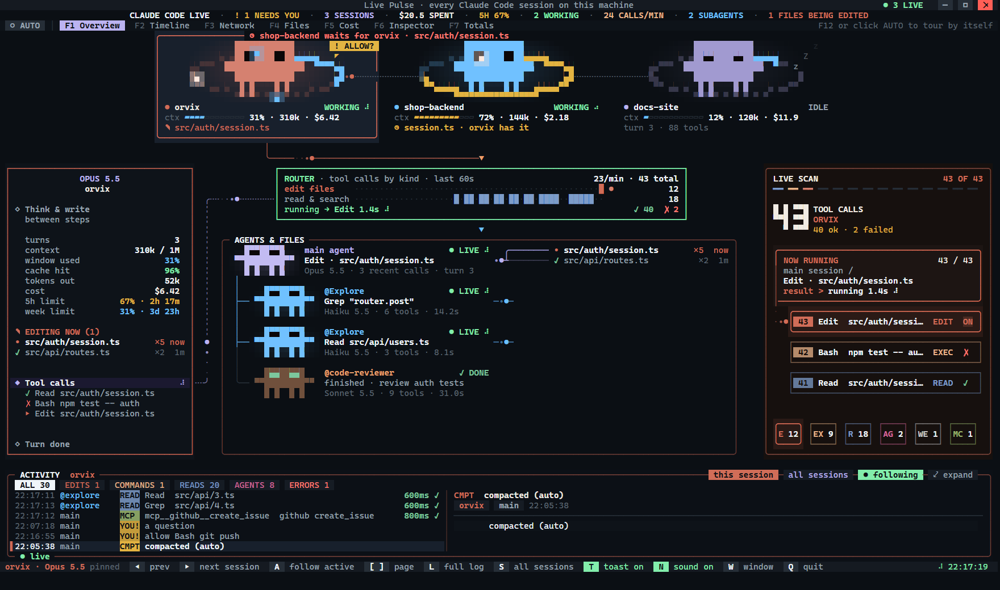

Watch every Claude Code session on your computer work in real time, on one beautiful animated screen: what each one is doing, which files it changes, what it costs, and the moment it needs you.
Put it on a second monitor and keep working. Live Pulse shows every session as a living creature and turns all the activity into something you can read in a second.
Each session moves while it works, sleeps when idle, and raises a bubble when it needs you.
The files it reads, the code it changes and the commands it runs, as they happen.
When Claude starts a helper agent, a new creature is born, wired to the session that started it.
What each session costs, how fast it spends, and when your 5-hour limit will run out at this pace.
A Windows notification with a sound when a session needs your approval, even if you are in another app.
The screen tours its pages by itself and jumps to whatever just happened, like a control room.
Two sessions never edit the same file at once: the second waits for the first to finish.
All tokens and money across every project on your computer, with each project's share.
Switch with the tabs or the keys F1 to F7. Or press AUTO and let it switch for you.

You need Windows 10 or 11 with Windows Terminal, Node.js 18 or newer, and Claude Code.
In Claude Code, type this and choose Install for you (user scope):
Close it and open it again. The Live Pulse window opens by itself. If it does not, type /pulse.
Drag the window there, or press M. Every session you open from now on appears in it.